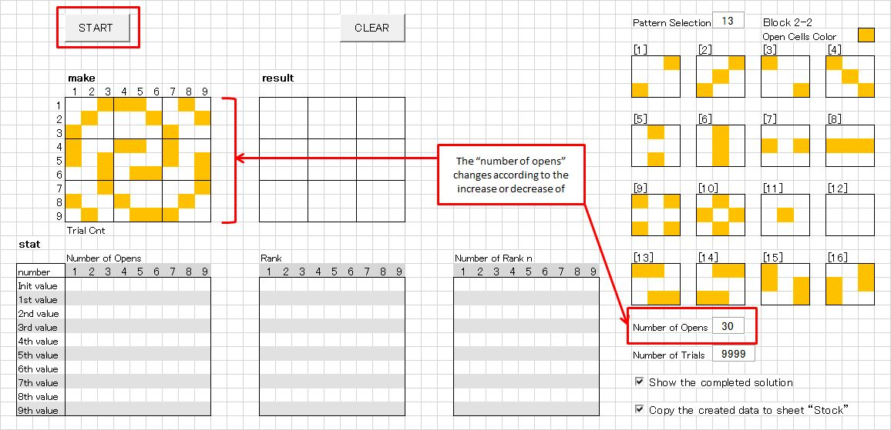
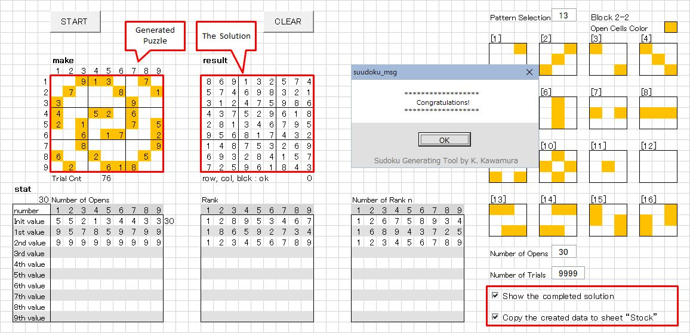

"Sudoku Puzzle Generator Tool" Another Method
The previously released "Sudoku Puzzle Generator" (hereafter abbreviated as Sudoku Tool) created puzzles by first generating a completed solution (all 9×9 cells filled), then making as many blanks as possible. For details, please see suudoku_doc. [Note1]
Using this method, puzzles with 23 or more open cells could be generated. However, since the open-cell patterns were chosen randomly, it was not possible to create puzzles with a user-wished pattern.
[Note1]
Please also refer to "Sudoku Puzzle Generator Update" (hereafter abbreviated as Sudoku Update).
Link:
suudoku_update01
This another method allows you to create puzzles with freely defined patterns.
The following explains the steps for puzzle creation:
-
Open "z.suudoku_04.xlsm" from Explorer.

-
The procedure from creating a pattern to generating a puzzle is explained below.
-
In the [make] area, fill in the open cells by coloring them orange. Clicking a cell will turn that cell and its diagonal counterpart orange.

-
Continue creating the pattern you have in mind.
If you want to remove a cell, click its diagonal counterpart and the orange color will be cleared. -
An example of a created pattern is shown below.
Press the START button to begin puzzle generation.
-
When puzzle generation succeeds, the following screen will appear:
You will see that the numbers to be opened have been filled in the orange cells. If the two checkboxes in the lower-right corner of the screen is checked, the solution will be displayed, and the generated puzzle will be copied to the [Stock] sheet.
-
Press the [CLEAR] button to return to the initial display screen.
-
About the number of open cells:
Interesting patterns can be generated with around 28–32 open cells, and such puzzles can also be solved without undue difficulty. From my debugging tests, I have confirmed that puzzles can be generated with 25 or more open cells.
DOWNLOAD
Notes on using this tool
- Unauthorized redistribution of this tool is strictly prohibited.
- If you wish to improve or enhance the logic, please contact me and I will provide the source code.
Click "z.suudoku_04_en.zip" to download.